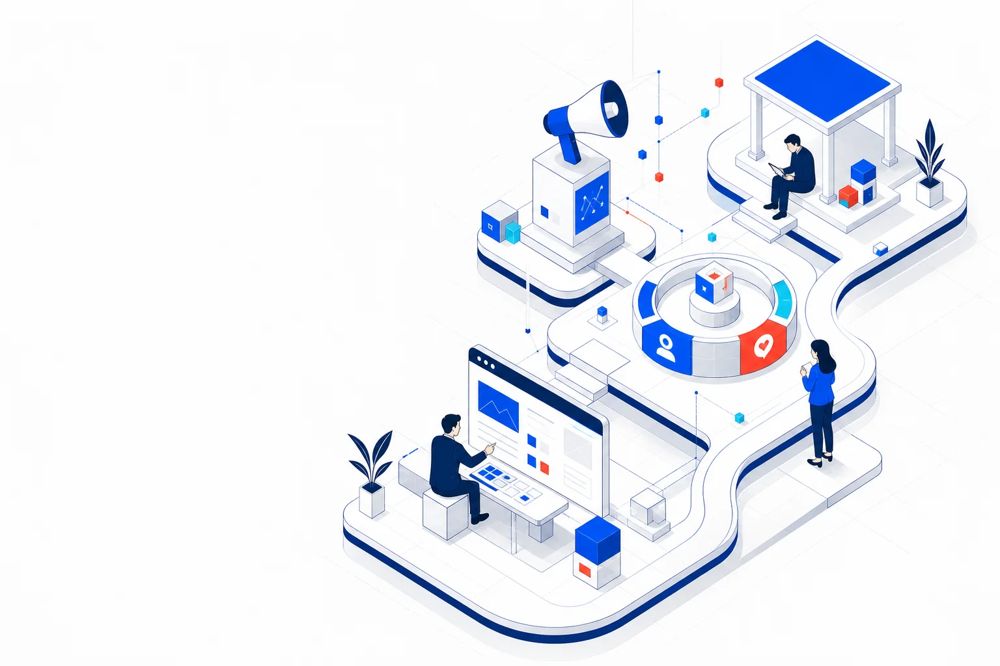
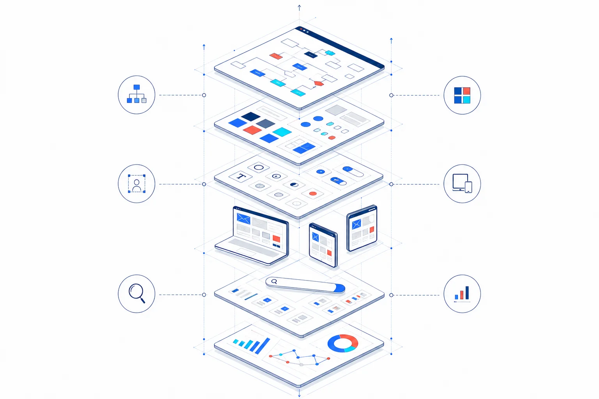
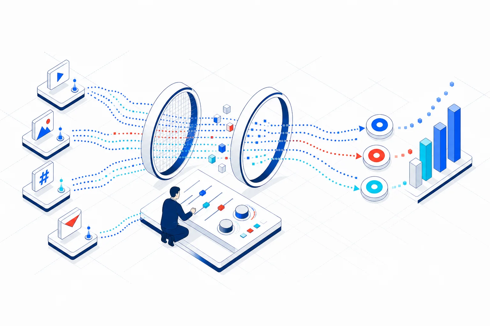
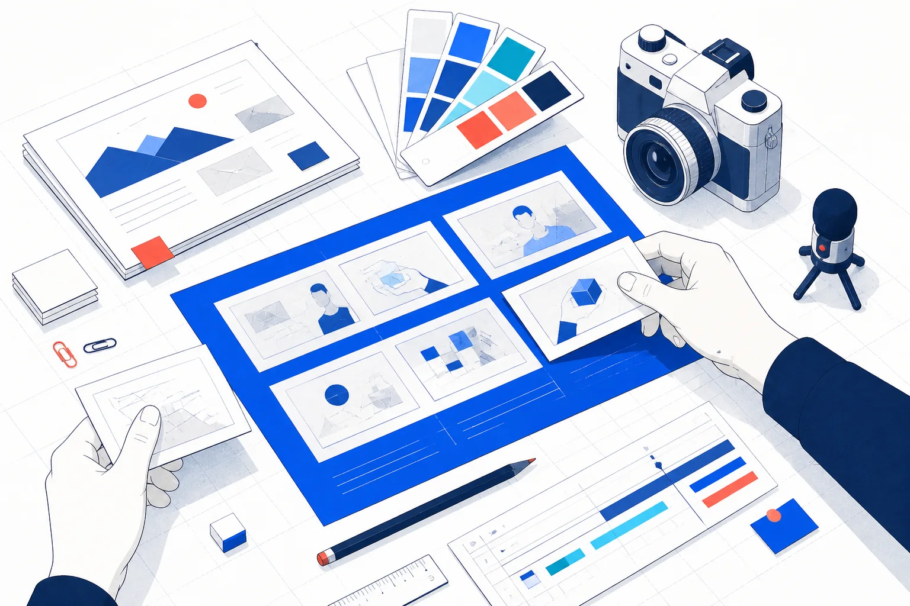
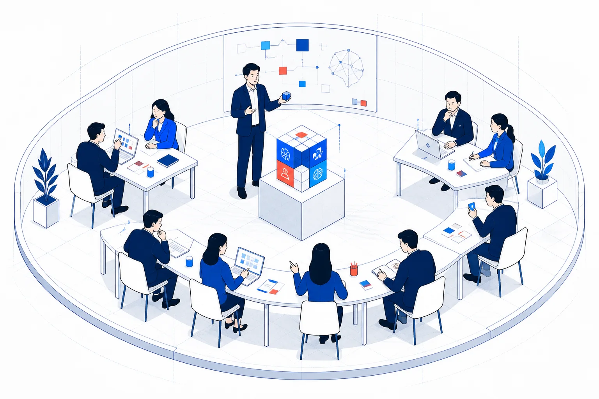
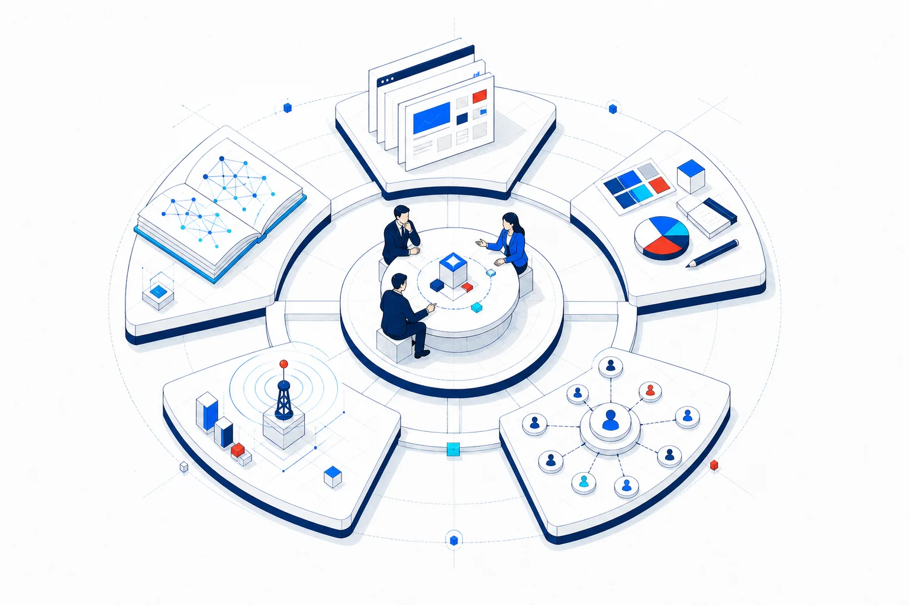
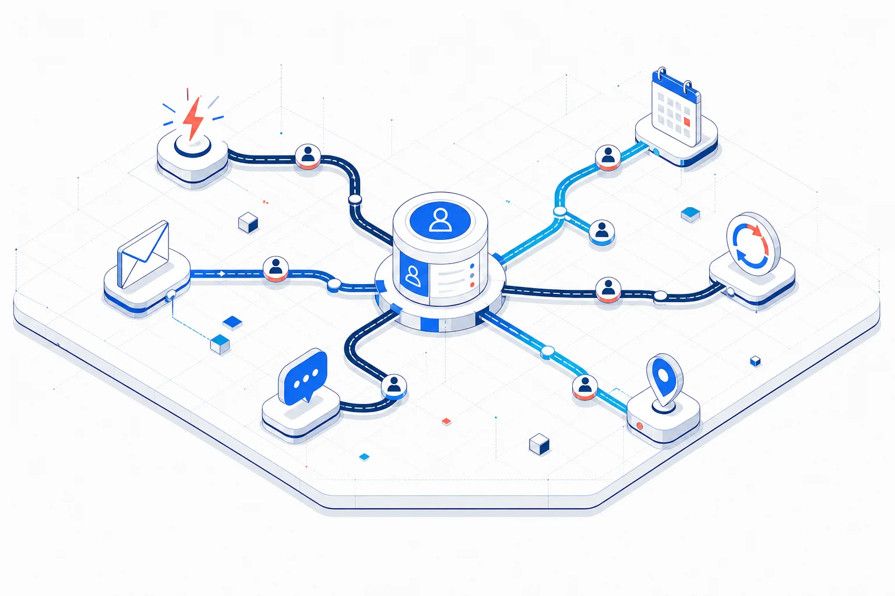
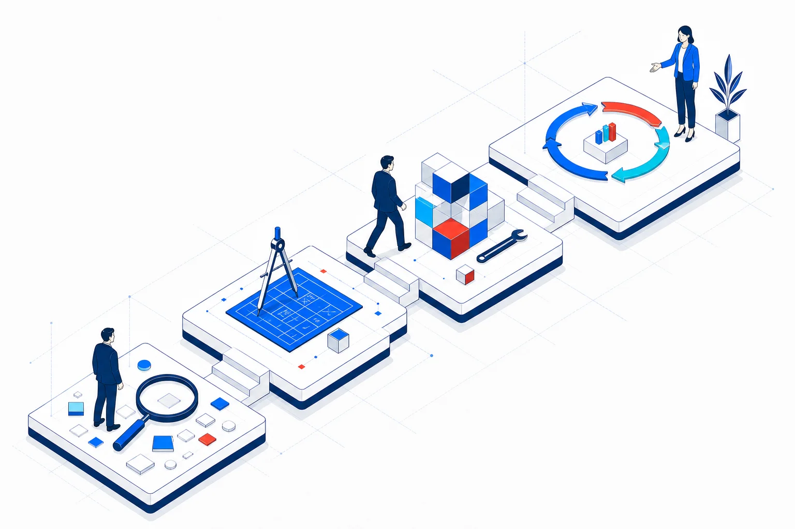

01 / HP PRODUCTION
HP制作サービス
SEO・AIOを見据え、問い合わせにつながる企業サイトを初期費用30万円から制作します。





Our Role
制作会社、広告代理店、システム会社を個別に探す前に、事業の課題と優先順位を整理します。
窓口を分けず、Web・集客・顧客管理・人材育成を横断して支援。施策同士がつながることで、改善を続けやすくします。

Services
各領域を単独でご相談いただくことも、複数を組み合わせて進めることもできます。
SEO・AIOを見据え、問い合わせにつながる企業サイトを初期費用30万円から制作します。
Web、LP、バナー、動画で事業の価値を伝えます。
データに基づき集客効率を改善します。

顧客情報と継続コミュニケーションを整えます。
生成AIを実務で使い、自走できる人材を育てます。
Why EMPLAY
制作、広告、CRM、AI研修まで窓口を一本化します。
予算と体制に合わせ、実行できる優先順位を設計します。
新しい技術を、現場で継続利用できる業務へ落とし込みます。

How We Work
現状と目標を確認し、必要な支援を選び、制作・導入後も効果を見ながら改善します。
方向性が決まっていない段階でもお問い合わせください。